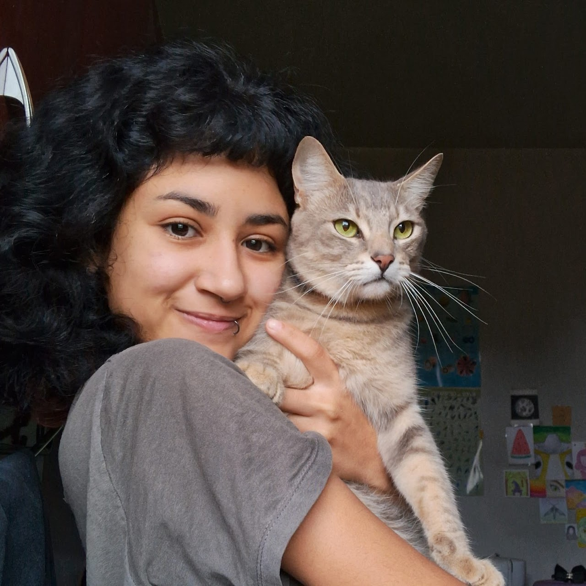
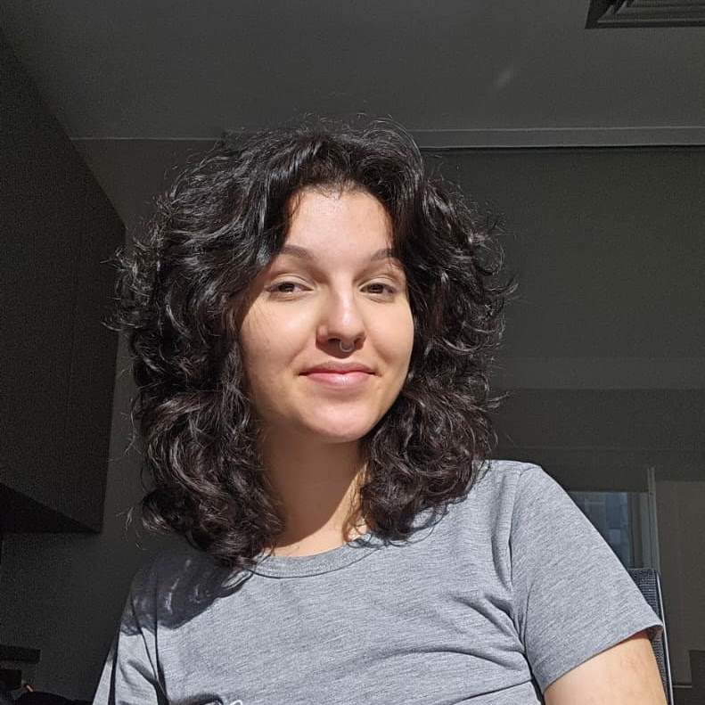
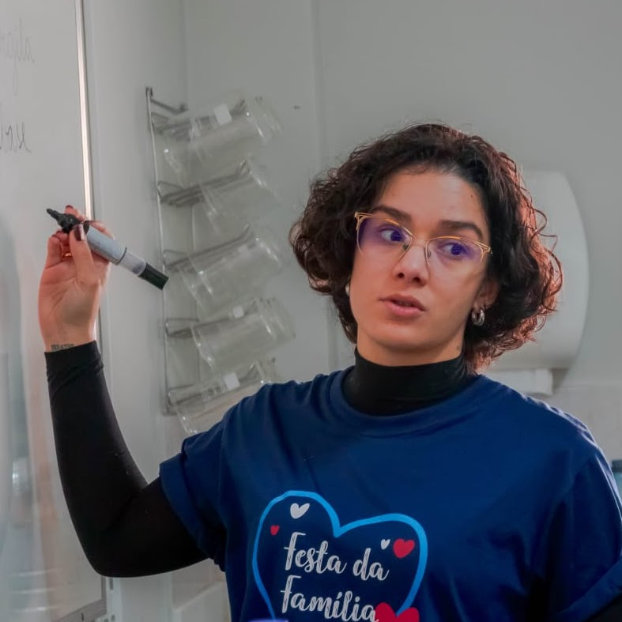
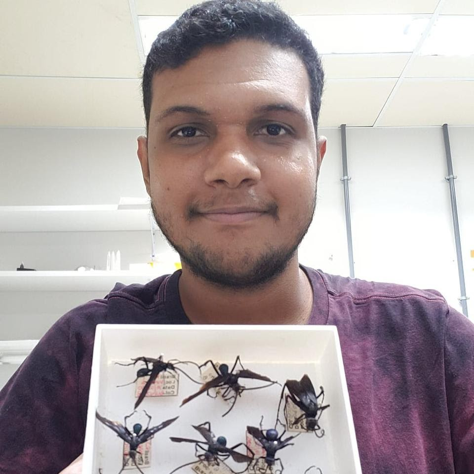
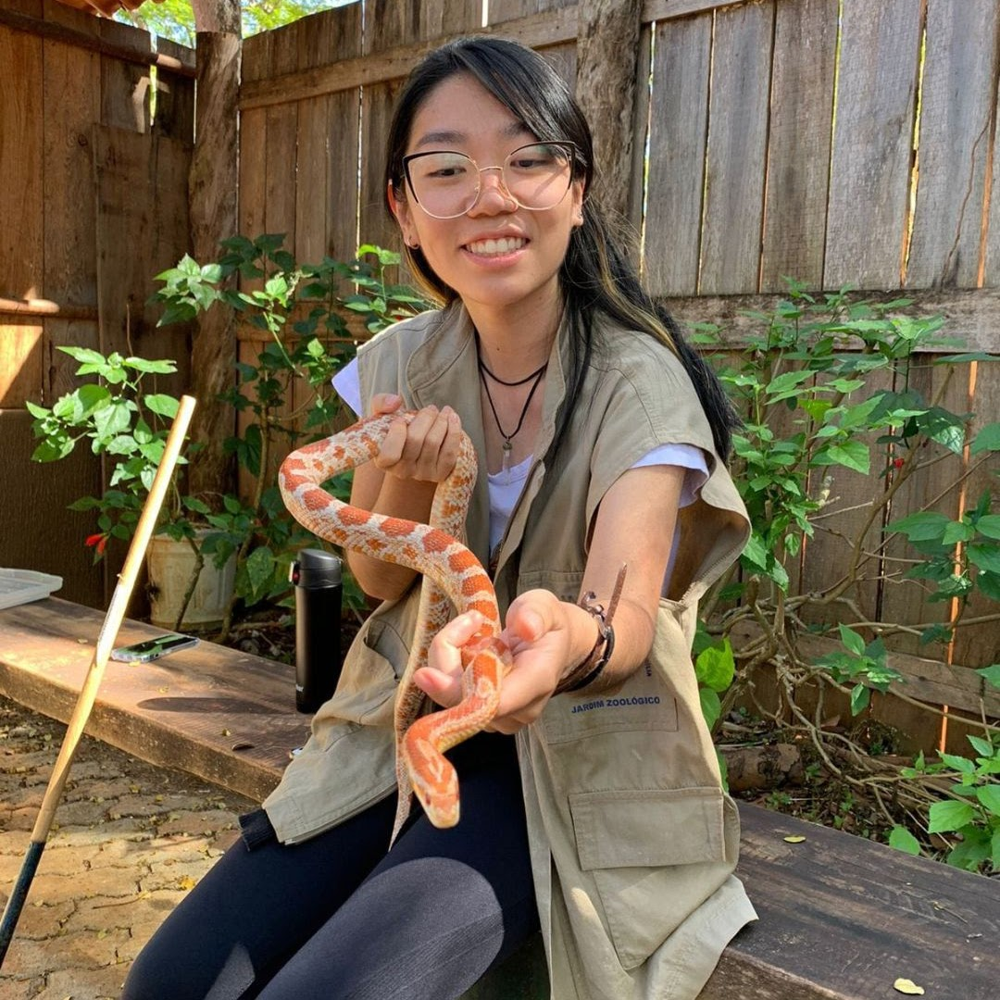

Amanda Brito
Coordenador / Professor
Tenho 25 anos e curso Licenciatura em Biologia. Tenho muito interesse nas áreas de Entomologia e educação. Já fiz parte de alguns projetos de extensão e monitorias e atualmente estou na Endêmica (empresa jr) e estagiando. Se precisarem de mim, estarei no LEC para ajudar vocês!

Amanda Lima
Pesquisadora
Oiii! Meu nome é Amanda Lima, estou no sétimo semestre da licenciatura em Ciências Biológicas. Atualmente faço parte do LabCripto, onde atuo principalmente com biologia molecular. Também sou monitora do Anki em Anatomia Animal e participo das atividades do LACV. Tenho uma grande paixão por ensinar e por compartilhar o que aprendo ao longo da minha formação.
Ana Júlia
Bolsista de Extensão
Tenho 24 anos, estou no 11º período de licenciatura. Gosto muito das áreas de microbiologia, evolução e zoologia, além da educação. Atualmente estagio no laboratório de micologia e já fiz parte do PIBID e da gestão do CABio. Sou comunicativa, adoro conversar e gosto muito de ser monitora, então, se precisarem de mim, estou aqui!

Beatriz Flores
Iniciação Científica
Tenho 22 anos e atualmente estou no 10º semestre de Licenciatura em Biologia. Já participei de gestões do CABio, fiz parte do PIBID e do Cerrado Visual. Hoje componho a Articulação de Comunicação da ENEBio, e atuo como professora de Ciências e Laboratório. Conheci o LEC ainda no 3ºsemestre, com a disciplina de Didática das Ciências Naturais. Me encantei pelo espaço e por todo seu potencial.

João Victor
Professor Colaborador
Oii, eu sou o João, tenho 24 anos e estou no 8º semestre de Licenciatura em Biologia. Atualmente estou estagiando na área de Zoologia, mas meu maior interesse é na Educação. Conheci o LECC devido outra monitora e estou animado para contribuir com esse espaço!
Lívia Neves
Bolsista de Ensino
Tenho 21 anos, estou no 8º semestre de Biologia - licenciatura e faço parte da Diretoria de Comunicação da A.A.A. Desnaturada. Tenho muito interesse em genética e na docência. Também curso pedagogia e, atualmente, trabalho com crianças em uma escola bilíngue. Adoro ensinar e não me imagino trabalhando em outra área.

Mariana Higa
Desenvolvedor / TI
Tenho 26 primaveras. Sou bióloga e estou cursando licenciatura em algum semestre dessa UnB. Gosto muito de fisiologia, zoologia e educação. Já estive em alguns projetos de divulgação científica e me identifico muito com a área. Atualmente faço parte do PIBID e adoro ajudar os outros. Sempre que precisarem, podem me dar um "oi" lá no LEC!
Mariana Reis
Pesquisadora de Pós-Doc
Oie, sou a Mari Reis, muito prazer! Estou no 9° Semestre de Biologia (Licenciatura) e trabalho com plantinhas (musgos) no LabCripto, além de fazer parte do projeto de extensão do Jardim Louise Ribeiro, atuando no GT Extensão e Ensino e agora também faço parte do LEC!!! Quando não me encontrar nesses três lugares pode ter certeza que estarei ou me aventurando em campo, algum esporte ou dando a maior gargalhada com algum amigo!!!!
Paulo Neres
Estagiário
Olá, meu nome é Paulo Neres. Sou Professor Biólogo da SEE/DF, formado pela UnB, aluno de Biologia Bacharelado e pesquisador no Instituto Brasília Ambiental. Durante a graduação sempre fui apaixonado pela educação e sei que essa é minha vocação, trabalhei com diversas disciplinas de educação em ciências. Atualmente atuo na Coordenação de Extensão do IB, como apoio/suporte. Também faço parte do CineBio UnB, projeto esse criado por mim e mais duas mulheres cientistas.